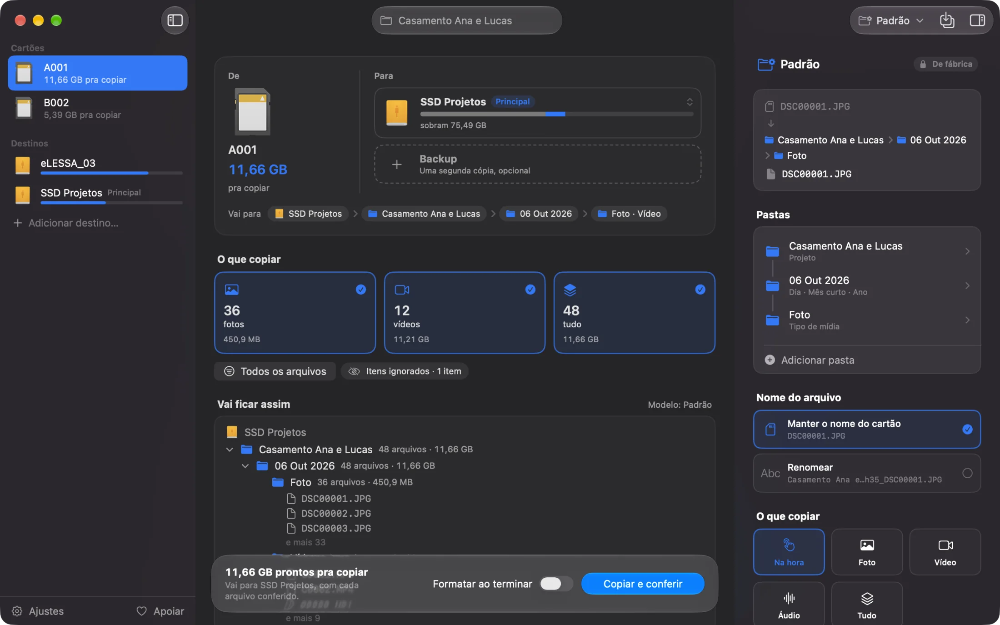
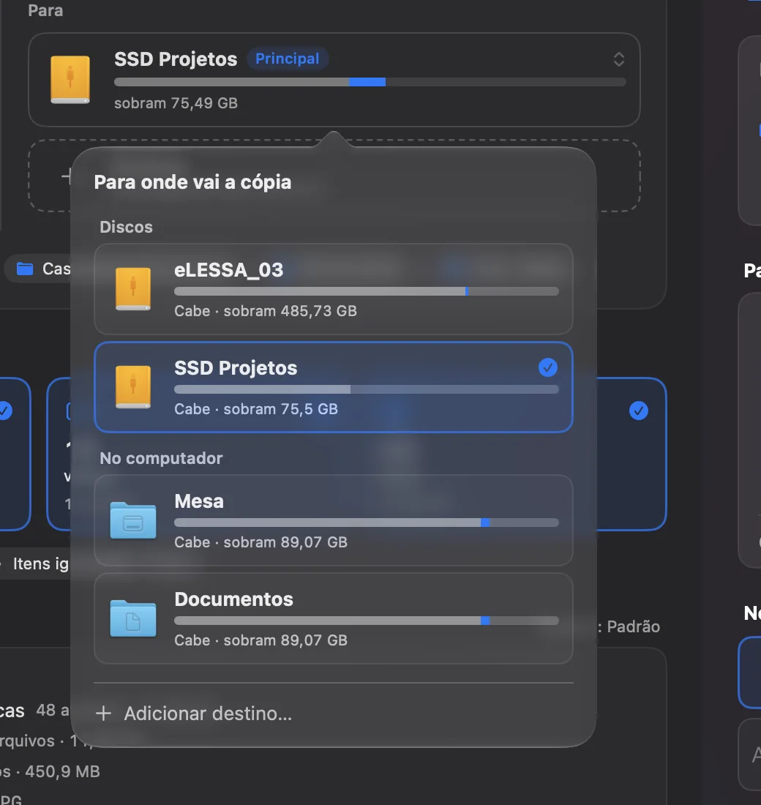
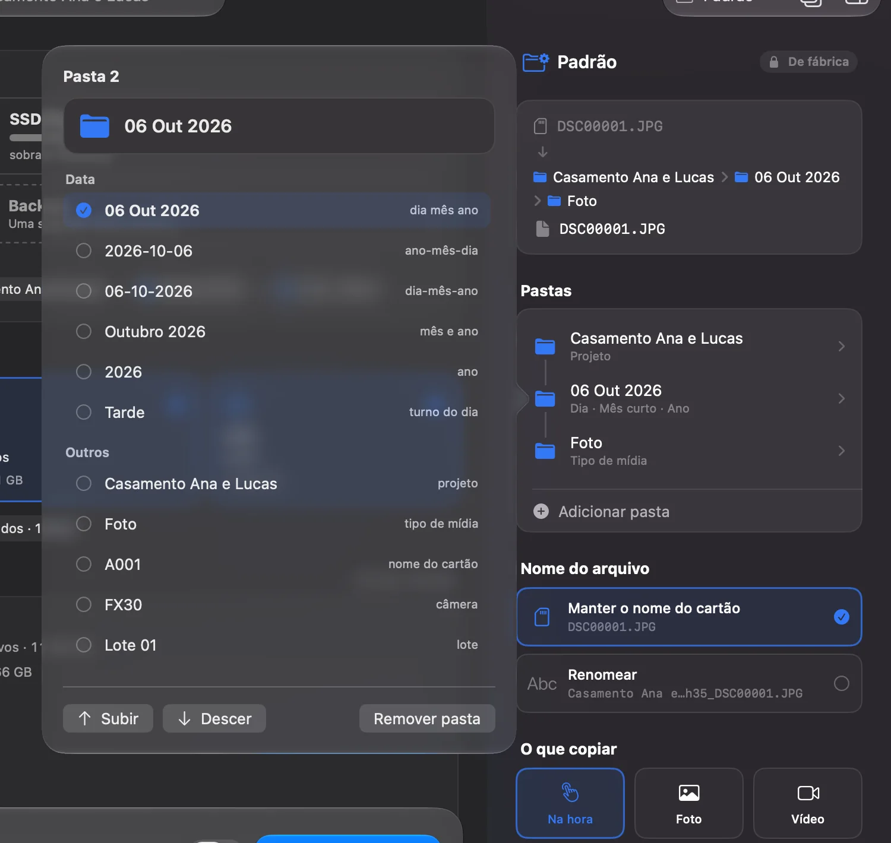
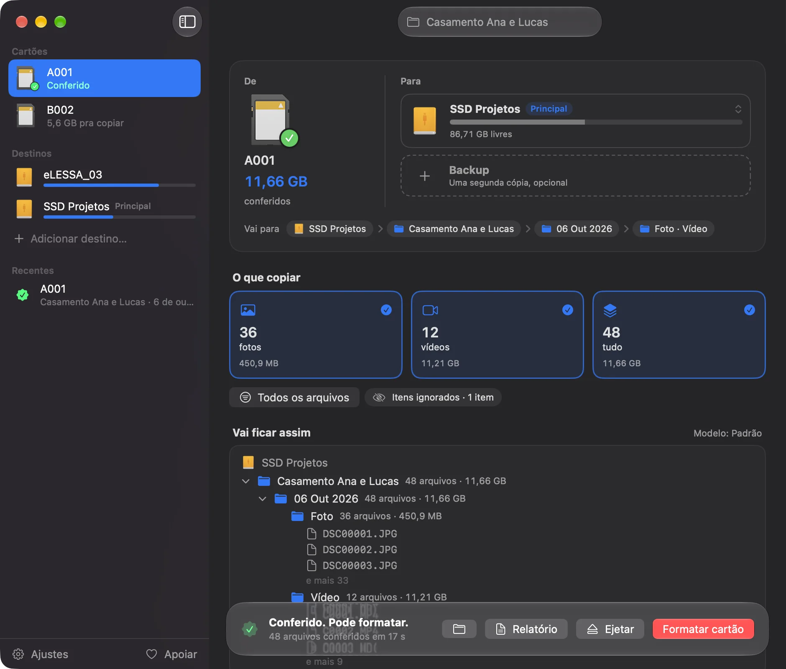
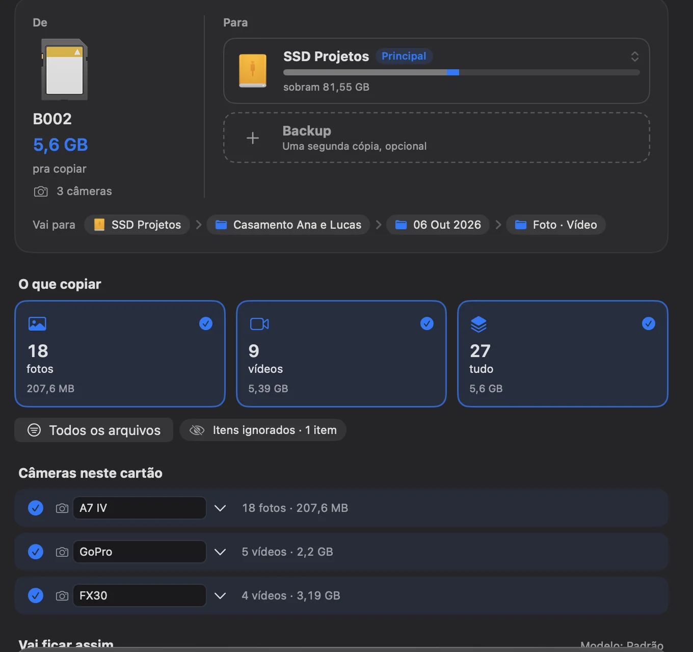
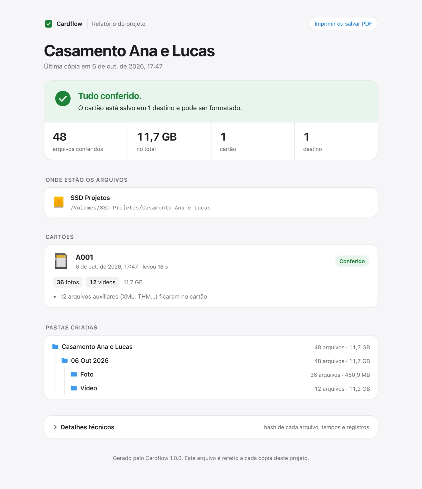

Backup em dois discos
Principal e backup na mesma rodada, conferidos juntos.
O Cardflow copia o cartão para os seus discos, confere arquivo por arquivo e só libera a formatação quando tudo bateu.
Grátis e sem cadastro. Precisa do macOS 26 ou mais novo.

De um lado o cartão, do outro o disco, com quanto espaço sobra depois da cópia e a pasta exata onde cada arquivo vai parar. Se quiser outro disco, é só clicar nele.

Você escolhe o formato da pasta vendo o nome que ela vai ter: 06 Out 2026, 2026-10-06, Outubro 2026. O nome da câmera vem do próprio arquivo, do jeito que você fala: FX30, A7S III, R5.

Depois de copiar, o Cardflow lê cada arquivo de volta no disco e compara com o do cartão. O verde só aparece quando tudo bate, e aí dá para formatar o cartão ali mesmo.
Conferido. Pode formatar.
Fotos de uma câmera, vídeos de outra e uma GoPro no mesmo cartão? Cada arquivo sai com o nome da câmera dele. Se uma das câmeras for de outra pessoa, deixe os arquivos dela no cartão. Enquanto eles não forem copiados, o Cardflow não deixa formatar.

Cada pasta de projeto ganha um relatório simples: o que foi copiado, para onde, e se está tudo conferido. Quem quiser os detalhes técnicos abre a parte de baixo e vê o hash de cada arquivo.

Principal e backup na mesma rodada, conferidos juntos.
Se o disco desconectar no meio, a próxima cópia continua sem copiar de novo o que já foi.
RED, Blackmagic, P2 e XAVC ficam com a estrutura que o editor espera.
Formata o cartão no padrão oficial do SD, e só depois da conferência.
Seus arquivos não saem do Mac. A internet só entra para buscar atualização.
O app e o relatório em português, inglês e espanhol.
Quem faz é a Lessa Films, que também passa o dia descarregando cartão. Se o app te poupa trabalho, dá para apoiar.
App nativo, assinado e notarizado pela Apple. Quando sai versão nova, ele avisa e se atualiza com um clique.
Grátis e sem cadastro. Precisa do macOS 26 ou mais novo.